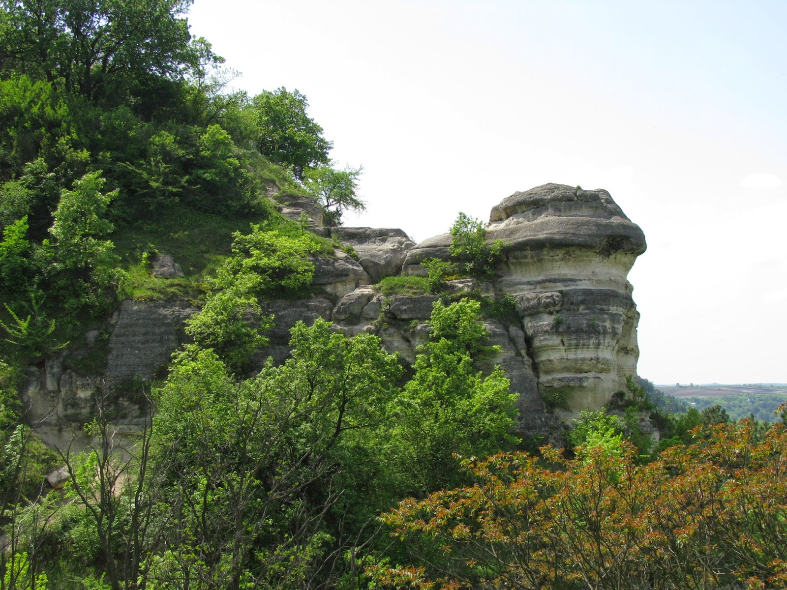
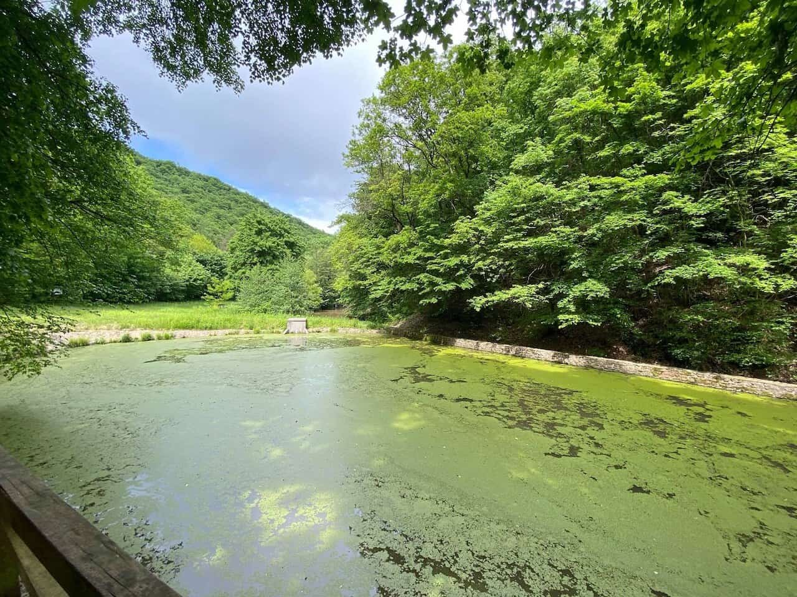
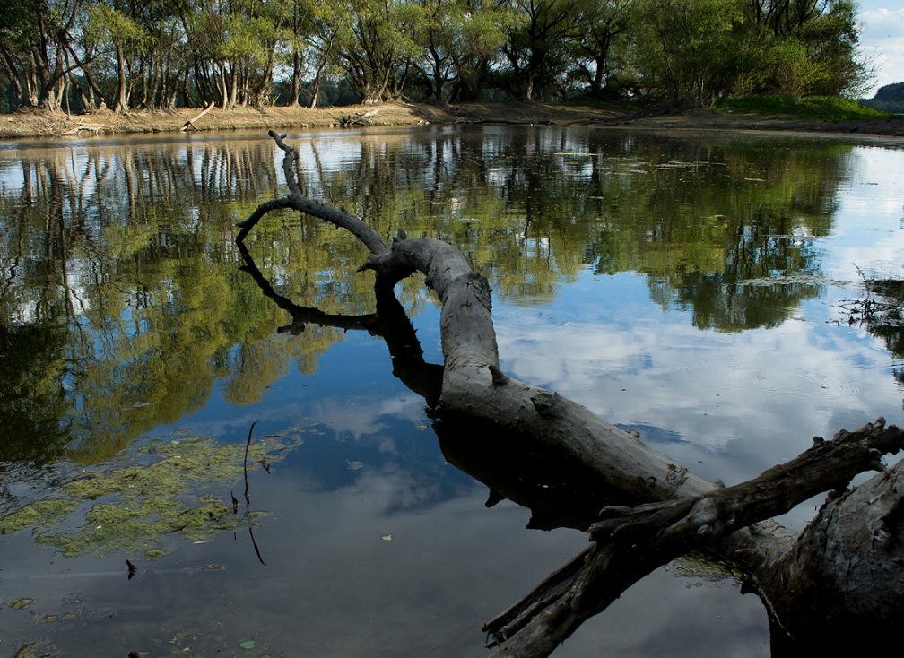

Nyakas-kő, Biatorbágy
A Nyakas-kő a Budai-hegység egyik legszebb geológiai képződménye, amely a természet csodáját mutatja be. A szikla különleges formái és a környező táj szépsége vonzza a turistákat és a természetkedvelőket egyaránt. A Nyakas-kő környéke számos kirándulóútvonalat kínál, ahol a látogatók felfedezhetik a terület természeti értékeit és élvezhetik a csodálatos kilátást.
A Budai-hegység térségében gyakran jelennek meg a felszínen középső miocén üledékes kőzetek, amelyek az egykori bádeni és szarmata korszaki tengerekben rakódtak le (kb. 15-13 millió évvel ezelőtt). A meleg, szubtrópusi, normális sótartalmú sekélytengeri vízben rengeteg élőlény élt (pl. kagylók, csigák, tengeri sünök), amelyek fosszíliái tömegesen lelhetők fel a bádeni korú ún. „lajtamészkő” feltárásaiban. A szóban forgó Nyakas-kő alatti vízmosások tárják fel ezt a rétegsort, maga a szikla azonban nem ebből a bádeni mészkőből áll.
A bádeni után következő szarmata korszak élővilága már nem volt olyan gazdag, mivel a Kárpát-medencét kitöltő víztömeg kapcsolata többször megszűnt a világtenger vizével. A sótartalom-ingadozások miatt a tengeri élővilág elszegényedett, ami tükröződik az ekkor képződött üledékes kőzetek fosszíliatartalmában is. A korszak jellemző kőzete a jelenleg érvényes rétegtani beosztás szerint a Tinnyei Mészkő Formáció névre hallgat (régi elnevezésén a „szarmata durvamészkő”). A Nyakas-kő szintén ebből áll, s Biatorbágy környékén nagy területeken fordul elő, több helyen bányásszák is (pl. Sóskút).
A Nyakas-követ felépítő üledékes rétegsor cementáltsági viszonyai eltérőek: jobban cementált, meszesebb és kevésbé cementált, homokosabb sorozatok váltogatják egymást. A keményebb padok jobban ellenálltak a külső erők (pl. szél, víz) felszínpusztító tevékenységének, mint a kevésbé cementáltak. Hosszú idő alatt ennek az lett az eredménye, hogy a cementáltabb rétegek kipreparálódtak a kőzetfalak síkjából, míg a puhábbak bemélyedésekként jelentkeztek. Ez az oka tehát a látványos formakincsnek.
Forrás: Turista Magazin
Miklós-deák völgy, Pilismarót
Ha a Visegrádi-hegységben keresünk csendes, kis forgalmú, de annál látványosabb kirándulóhelyet, akkor a pilismaróti Miklós-deák-völgyet érdemes felkeresni. Ez a festői szépségű terület kiváló úti cél mind a természetkedvelők, mind a kirándulók számára.
A pilismaróti Miklós-deák-völgyi tavak mesterséges eredetűek, a Pilisi Parkerdő Zrt. 2014-ben adta át őket, ekkor került sor a tavak rekonstrukciójára. A munkálatok célja a vízfelület létesítése, a tározó szerep és a vízfolyás átjárhatóságának biztosítása volt. A tavak a kétéltűek és a madarak számára is nagyon fontosak, a megkerülő csatorna kialakítása pedig igazi kuriózum Magyarországon, ez átjárást biztosít a tórendszer feletti és a tórendszer alatti mederszakasz között a vízi állatfajok számára.
A Miklós-deák-völgyi tavak körüli terület számos lehetőséget kínál a kikapcsolódásra és a természet élvezetére. A tavak körüli sétányok és ösvények lehetővé teszik a látogatók számára, hogy felfedezzék a környék természeti szépségeit, miközben a madarak éneke és a víz csobogása kíséri őket. A terület különösen népszerű a horgászok körében is, akik élvezhetik a csendes vízparti pillanatokat.
A Miklós-deák-völgyi tavak tehát nemcsak egy festői szépségű helyszín, hanem egy olyan természeti kincs is, amely lehetőséget ad a kikapcsolódásra és a természet közelségének élvezetére. A Pilisi Parkerdő Zrt. gondoskodása révén a tavak és környezetük megőrzése és fenntartása biztosítja, hogy ez a csodálatos hely továbbra is elérhető legyen a jövő generációi számára.
Forrás: Csodahelyek.hu
Beliczay-sziget, Érd
A Beliczay-sziget Érd déli részén található, a környék legháborítatlanabb formában megmaradt, a táj ősi arculatát megőrző része.
A Pilisi Parkerdő 61 ezer facsemetét ültetett el az Érd közelében lévő Beliczay-szigeten, hogy a 67 hektáros területen az eddig két fafajból álló sérülékeny erdőborítást stabil, változatos állományú puhafás ligeterdők váltsák fel.
A szigeten a beavatkozás előtt szinte csak nemesnyár élt. Az egykor gazdasági céllal ültetett azonos génkészletű egyedeknek gyenge a környezeti hatásokkal szembeni ellenálló képessége, a területen egyre több a pusztuló fa.
A jelenleg közel 10 hektárt érintő erdőtelepítés során szürkenyár, fehérnyár, korai juhar, mézgás éger, valamint szil csemetéket ültettek. Az állományt a terület nagy látogatottsága miatt a városi parkokban is jellemző fafajként több ezer platáncsemetével egészítették ki.
A Beliczay-sziget a Duna menti erdők egyik legfontosabb élőhelye, amely gazdag növény- és állatvilággal rendelkezik. A terület különösen fontos a madarak számára, mivel itt található a Duna egyik legnagyobb vízfelülete, amely táplálékot és fészkelőhelyet biztosít számukra.
Forrás: Hetedhétország